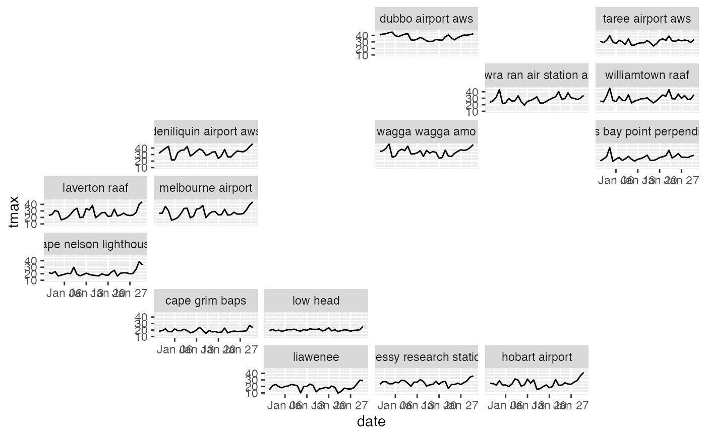
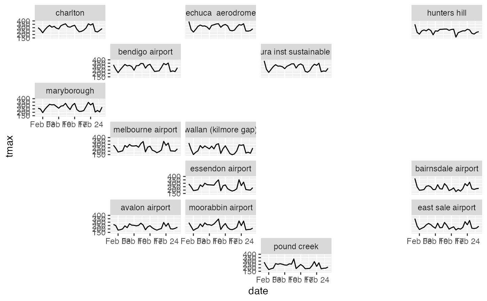

gen_grid.RdThis function automatically generates a grid for facet_geo
based on longitude and latitude.
gen_grid(data, var = NULL, nrow = NULL, ncol = NULL)
| data | a cubble object |
|---|---|
| var | the facet variable |
| nrow | number of row in the facet |
| ncol | number of column in the facet |
#> #>#> #> #>library(ggplot2) library(geofacet) library(dplyr) # filter out 15 stations in Victoria short <- aus_climate %>% filter(stringr::str_detect(id, "ASN0008")) %>% slice_tail(n = 15) #################### # how those stations look like in Victoria map state_map <-rmapshaper:: ms_simplify(ozmaps::abs_ste %>% filter(NAME == "Victoria"), keep = 2e-3) plot_map(state_map) + geom_point(data = short, aes(x = long, y = lat)) + ggrepel::geom_label_repel(data = short, aes(x = long, y = lat, label = name))#################### # generate the grid grid1 <- short %>% gen_grid(var = name) # looks like there's a sudden tmax drop around Feb 2020 around melbourne # (melbourne airport, wallan, essendon, avalon, and moorabbin airport) while # the drop is less obvious in eastern victoria. short %>% stretch() %>% migrate(name) %>% dplyr::filter(year(date) == 2020, month(date) == 2) %>% ggplot(aes(x = date, y = tmax, group = name)) + geom_line() + facet_geo(vars(name), grid = grid1)#>#> Warning: Using `as.character()` on a quosure is deprecated as of rlang 0.3.0. #> Please use `as_label()` or `as_name()` instead. #> This warning is displayed once per session.#> #> #> #>